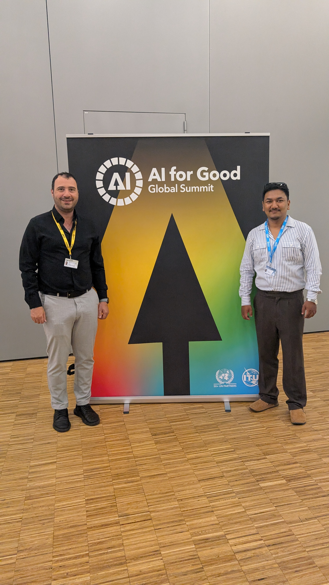
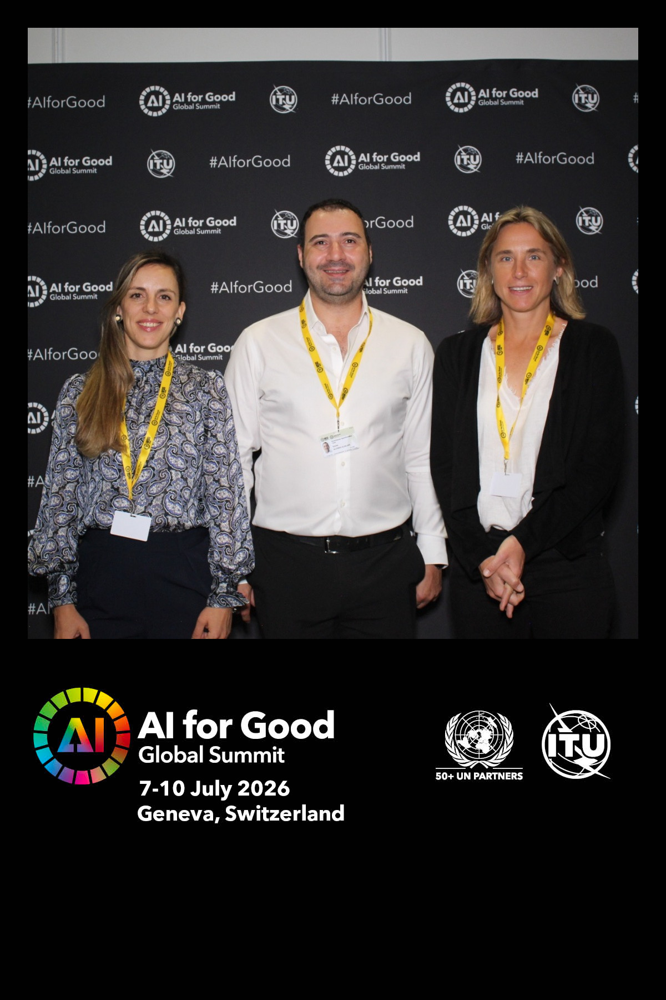

Participant · Geneva, Switzerland · 6–10 July 2026


I was back at the AI for Good Global Summit in Geneva for the second year running — five days at the ITU's annual gathering where governments, researchers, civil society, and industry come together around one question: how do we make AI actually useful for the planet and the people most left behind? It's one of the few spaces where that question is asked seriously, and where the SDGs feel like a real design constraint rather than a slide deck talking point.
What struck me most was how much space geospatial AI had claimed compared to previous editions. The GeoAI for our shared future session on Tuesday was packed — standing room — and the conversation had clearly matured: we weren't debating whether geospatial foundation models are coming, but what it'll take to make them useful beyond the well-resourced institutions that can already afford frontier tooling. Friday's half-day on GeoGPT and OneEarth felt like a glimpse of where things are heading — multimodal models pulling together satellite imagery, remote sensing, and geological surveys into something like a shared planetary knowledge layer. As someone who spends a lot of time thinking about open geospatial data, that resonated deeply.